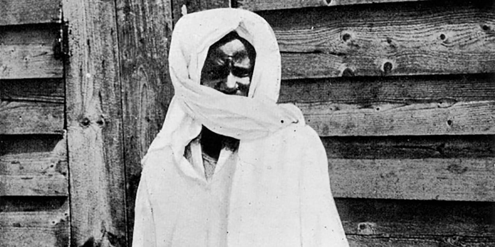

Dès le début de 1300.h (1882) le Cheikh révéla son ambition : la providence lui offrit le contexte exceptionnel de prouver la foi exclusive qu’il témoignait a DIEU et d’obtenir une promotion publique au rang de vertueux. Il déclina l’offre du notable chargé alors de l’oraison funèbre de son père Serigne MBacké Mor Anta Sally et lui rétorqua après les civilités d’usage : "Quant au Damel (Roi), je regrette vivement, il n’est pas de mes usages de fréquenter les souverains ; je ne suis pas tenté par leurs biens, encore moins par leur prestige. Je ne cherche des honneurs qu’auprès du SOUVERAIN SUPRÊME." Et, séance tenante, il fit couler redoutablement son encre contre cette tentative de corruption manifeste : Ils m’ont dit "penche vers les portes des sultans et tu seras comblé infiniment." J’ai répondu : je me suffis à DIEU et ne trouve satisfaction qu’en LUI et jamais je ne donne mon agrément en dehors de la Religion et de la Science" Je n’ai de crainte ou d’espoir qu’en mon ROI, IL me protège et m’enrichit. Comment disposerais-je d’ailleurs ma destinée entre les mains de ceux qui, de leur sort, sont aussi indigents que les pauvres ? Et comment donc la satisfaction des besoins me pousserait-elle à fréquenter les parterres de Satan ? Si je suis dans l’affliction ou dans la nécessité, j’invoque le MAITRE du TRÔNE ; IL est l’ASSISTANT, l’OMNIPOTENT ; DIEU commande à Sa guise à qui relève de Sa VOLONTE. S’IL veut hâter une chose, celle-ci se réalise rapidement ; S’IL veut l’ajourner, cette dernière s’attarde momentanément. O toi qui me blâmes ! n’abuse pas outre mesure ; cesses de me blâmer ! car mon renoncement au Bas-Monde ne m’afflige guère. Donc , Si mon seul défaut est mon rejet des biens des roitelets, c’est là un précieux défaut qui ne me déshonore pas. CHEIKH AHMAD0U BAMBA lança ainsi un défi foudroyant aux sultans et aux dignitaires religieux et s’adonna davantage à DIEU. Le Cheikh ne se sentait plus orphelin, car DIEU LUI-MEME déclare Mon serviteur ne cesse de se rapprocher de moi par des actions dévotes, jusqu’a ce que je l’aime ;et quand je l’aime je devient les oreilles par lesquelles il entend, l’œil par lequel il voit, la bouche par laquelle il parle et les pieds par lesquels il marche. Il dit également : "Quiconque se rapproche de Moi de l’espace d’un empan je m’approche de lui de l’espace d’une aune " Et dans cette profonde aspiration à DIEU, en qui il avait sans conteste une soif ardente qui limitait ses activités d’enseignant, il déclara "DIEU m’a révélé Sa Face sans m’égarer, agréant ainsi ma vie." Il devint ainsi un esclave de DIEU agrée. La grandeur de DIEU fut telle qu’en la découvrant, il sentit aussitôt la nécessite d’honorer le Pacte Primordial de soumission qu’Il (le Cheikh) avait engagé avec LUI (DIEU) depuis la Pré-éternité (Azal). Face à cette ambition, DIEU lui indiqua le Prophète MOUHAMMAD à qui IL a disposé la Sagesse du Pacte Primordial. Alors le Cheikh déclara : "DIEU m’a indiqué le Prophète MOUHAMMAD" Et, solennellement, il rendit un hommage : "Accorde ta prière et ton salut à celui qui a répondu le premier par "oui sans doute !" le jour de l’interrogation "Ne suis je pas..." (Yawma Alastu) avant la prononciation des autres." DIEU procéda ainsi parce que notre Seigneur MOUHAMMAD est le Maître de toutes les Voies menant à DIEU. Il est aussi celui qui proposa aux croyants la Voie du Pacte d’Allégeance, et dont la réhabilitation nécessitait un candidat qu’Il cherchait en vain jusqu’au début du 14ème centenaire. En 1301 .H (1883), le Prophète lui apparut, venant de la Part de son SEIGNEUR, le Cheikh se confia entièrement à Lui, Lui prêta serment d’allégeance pour impétrer l’Agrément de DIEU. Le Prophète devint son Maître Spirituel et il abandonna toutes les voies spirituelles qu’il avait adoptées, les reniant même, il avait rencontré le Maître des Voies qui lui ordonna de ne plus dispenser un enseignement théorique, mais plutôt une éducation spirituelle. Aussitôt après cette rencontre, le Cheikh s’adressa à ses disciples en ces termes "Ceux d’entre vous qui étaient venus ici dans ledessein d’acquérir la science religieuse sont priés désormais d’aller chercher un autre maître ; par contre, ceux parmi vous qui ont la même ambition que moi peuvent rester avec moi, mais seront tenus d’observer scrupuleusement ce que je leur ordonnerai de faire." Cette déclaration fut étrange pour certains, ils l’accueillirent comme un coup de foudre ; pour eux, une pareille attitude confirma la calomnie de certains dignitaires qui le qualifièrent de par son zèle de dèsiquilibrè et se retirèrent purement et simplement. Cependant, un petit nombre d’entre eux reçut cette déclaration comme une aubaine . Ce fut pour eux l’occasion de prouver qu’ils étaient à la recherche d’un Homme comme lui. CHEIKH AHMADOU BAMBA proclama : " Je n’ ai Point fondé une confrérie (Tarîqa), j’ai plutôt trouvé la Voie qu’avaient suivie le Prophète et ses compagnons entièrement flétrie, je l ’ai défrichée le plus proprement, rénovée dans toute son originalité et j’ai lancé l’appel suivant : tout pèlerin qui désire partir peut venir ; voici la voie réhabilitée." Cette Voie est celle du Pacte d’Allégeance." Par conséquent, le groupuscule qui resta était lié à lui par un serment d’allégeance CHEIKH AHMADOU BAMBA était alors leur Maître spirituel. La vie du Cheikh et de ses partisans prit un tournant décisif. Cette phase dans laquelle la tournure se produisit est celle de la révélation, écoutons le Cheikh pour plus de précisions Il est parmi les prodiges du fils d’Abdallâh - Puisse DIEU lui accorder Paix et Salut, (DIEU) le SUBSISTANT Qui éclaire l’humanité par l’intermédiaire des Saints jusqu’à la fin des temps, chacun (d’eux) étant garant. de la Coutume Sacrée (Sunna) de l’Elu, la préservant des innovations blâmables (Bidca) d’avoir inspiré à son serviteur "Proclame ce qu’on te demande d’annoncer" (Façdac) De lui avoir ordonné sur lui sur sa famille et sur ceux qui l’ont suivi la plus pure prière de DIEU D’instruire ses aspirants et quiconque accepte ses conseils parmi les gens de l’époque et il l ’a fait accéder à la proximité de DIEU après l’avoir dépouillé des tares et honoré de parure. (in l’illimunation des cœurs "Munawwiru çudûr" vers 203 208) Toujours en 1301.h (1883) à MBacké Kajoor, avant de partir pour MBacké Baol, le Cheikh fit la déclaration suivante : l’OMNISCIENT m’a abreuvé des sciences et de leur charisme, certes IL est l’OMNISCIENT Je détiens une science autre que livresque alors ne ménage point ton ardeur dans le service que tu me rends. Par considération pour l’Elu (Al Muçtafâ) - sur Lui la Paix et le Salut de DIEU - le GENEREUX m’a accordé le charisme du Coran et des Sciences Religieuses. DIEU a mis dans mes Ecrits les secrets de la formule : "Il n’y a point de divinité si ce n’est DIEU" L m’a accordé des faveurs irréversibles et, grâce à LUI, je suis devenu un rempart et un asile ; c’est là la faveur que DIEU accorde à qui IL veut, LUI Qui m’a donné l’ordre de proclamer "Venez chercher refuge auprès de moi". Ce qui veut dire : DIEU m’a donné l’ordre de proclamer que je suis un asile et un recours, quiconque veut le bonheur ICI-BAS et dans l’AU-DELA doit chercher refuge auprès de moi. Désormais, CHEIKH AHMADOU BAMBA était sous la tutelle spirituelle légale de notre Seigneur MOUHAMMAD l’Envoyé de DIEU (Rasûla-l-lâh) - Paix et Salut sur Lui, son Maître à qui il vouait une dévotion exemplaire, un amour profond. Il le dit lui-même. "la Raison de mon service rendu au Prophète est l’amour intime que j’ai de l’essence de son être." Avant la fin de l’année 1301.h (1883), il avait une influence considérable, les souverains locaux, les dignitaires religieux parlaient de lui, les disciples affluaient de toutes parts et lui témoignaient les égards au-dessus de ce qu’ont voulu lui faire prétendre auprès des rois. Il entreprit alors d’émigrer à MBacké Baol.
C’est un parcours qui fut un marathon de 12 ans - allant du mois de Muharram 1300.h au mois de Ramadan 1312.h -. CHEIKH AHMADOU BAMBA confirma avec un groupe de mourides bien connu le Pacte d’Allégeance "Bayca" Le Prophète MOUHAMMAD ( Paix et Salut sur Lui) est le Premier à témoigner le Pacte Primordial de soumission à DIEU - l’homme ne remplira sa mission sur terre qu ’en se soumettant exclusivement à DIEU - c’est pourquoi au terme de sa mission, il nous laissa l’Islam comme Voie Royale du Pacte d’Allégeance. Les fils d’Adam qui eurent la Faveur DIVINE de répondre les premiers lorsque DIEU dit : "Ne Suis-je pas votre SEIGNEUR ?" sont ceux qui, Ici-bas, sont restés par pure Faveur DIVINE fidèles à leur engagement : ce sont les vertueux. Au terme de la vie du Prophète, le vertueux en qui DIEU trouvera une foi exclusive intacte, au-dessus de toutes les autres aspirations, héritera de la Mission de l’Elu et servira de modèle de soumission à la communauté musulmane. Ce dernier assumera le combat suprême par son âme vis-à-vis des autres dépendances en dehors de DIEU c’est le combat de l’indépendance du culte exclusif à rendre à DIEU qui valut la satisfaction de DIEU au Prophète et à ses compagnons qui ont versé le sang pour adorer leur SEIGNEUR exclusivement. C’est le Prophète qui proposa l’Agrément de DIEU aux musulmans à Hudaibiya, c’ est Lui qui leur indiqua la voie de cette Faveur Suprême du succès . Les musulmans engagèrent le Pacte d’Allégeance et exécutèrent scrupuleusement ses ordres sans jamais contrarier sa volonté, en Lui disposant la leur, leur raison et leurs désirs. Le Pacte de la Guerre (Baycatul Harb), les musulmans l’engagèrent à cAqaba ils mirent en gage leur vie et leurs biens jusqu’à ce que l’Islam se répande. Cela fut fait sur le champ de Bedr où les martyrs ont, dans leur agonie attesté qu’on leur a ouvert les portes du Paradis et, chacun d’eux fut pressé d’y entrer et de quitter la terre. "DIEU s’est fait céder par les croyants et leur vie et leurs biens, il leur a donné en échange le Paradis. Ils combattent sur le chemin de DIEU en tuant et se faisant tuer. C’est là une promesse authentique de DIEU dans la Thora, l’Evangile et le Coran. Qui tient mieux que DIEU ses engagements ?" (s9V111) Après la bataille de Bedr, le Prophète fut convaincu que la Religion de DIEU s’était répandue et qu’avec cette victoire de l’Islam, l’infidélité était vaincue pour de bon. Allors, il proposa aux musulmans le Pacte d’allégeance et ce, en contrepartie de la Satisfaction du TRES-HAUT. "DIEU a été réellement satisfait des musulmans lorsqu’il te prêtait Serment d’Allégeance sous l’arbre."(548V18) Au 14 ème siècle, il fut très aisé de retrouver celui qui allait dominer le siècle par sa foi exclusive en DIEU.
La même aspiration exceptionnelle qu’il avait en DIEU fut convertie dans le service de son Maître Spirituel MOUHAMMAD l’Envoyé de DIEU (Rasûlal-Lâh) son Patron, car c’est auprès de ce dernier que DIEU l’envoya. Et l’aspiration qu’il avait envers l’Elu était telle qu’il passa tout le temps à faire le Panégyrique de Celui au sujet de qui il nous dit Je Lui dois, pour la Face de DIEU et non pour autre chose, quelque chose qui l ’enchante, cela est en e`ffet un service qui confond tous les autres services." Dans cette profonde aspiration à servir le Prophète, il se confronta constamment à toutes les difficultés sur son chemin, comme trouver une terre d’accueil où dominerait la Voix de DIEU. A Mbacké Baol, son influence s’agrandissait il était devenu le point de mire de la Communauté Musulmane. L’approbation des disciples était non seulement massive, mais ses adhérents appartenaient a toutes les catégories de l’échiquier social (princes, personnalités religieuses et le petit peuple). Sa constance dans le service de l’Elu semblait être la solution des maux du Dâr al Islâm.Il y’avait autour de lui les opprimés, d’anciens ennemis de la France et des vertueux qui attendaient un Guide Spirituel. Le Cheikh faisait subir à ses disciples des exercices pieux interminables par l’alchimie spirituelle de ses écrits et les initiait dans toutes les branches et disciplines du travail. C’est ainsi qu’ils avaient atteint un degré de perfection tel qu’ils surpassèrent leurs semblables dans le sacrifice de l’âme et des biens pour la Face de DIEU. Avec cette émergence dynamique, le Cheikh était devenu insupportable aux yeux de ses proches, des administrateurs et des aristocrates. Devant la double pression de ceux qui affluaient vers lui et de ceux qui lui furent hostiles, il émigra à la recherche d’une terre de paix avec ses disciples, considérant les autres comme les feux de l’alchimie dans son objectif - L’Islam ne donne pas de Promotion à quelqu’un sans l’avoir éprouvé - il quitta MBacké Baol en 1304.h (1886) C’est à Dârou SaIâm où le SEIGNEUR qui efface les épreuves de ceux qui sont constants dans Sa Cause lui indiqua une Terre qu’iL a LUI-MEME promue au rang de Cité Bénite, de Maison de DIEU. DIEU la lui indiqua parce que l’endroit manifestait des Signes de la TOUTE-PUISSANCE DIVINE. C’est une Demeure qui dans toutes ses limites sacrées est sous Protection Absolue de DIEU ; c’ est également une Demeure dont l’ inviolabilité est entièrement du ressort du GARDIEN-VIGILANT . Son nom de baptême est TOUBA, elle fut fondée à la fin de 1305.h (1887) et au début de 1306.h (1888).
Le TRES-HAUT et servir le Prophète, en dispensant une éducation spirituelle aux Mourides : ceux-là qui sont préoccupés par l’Agrément de DIEU. L’installation de la Cité se poursuivait, les disciples affluaient sans cesse quant à lui, il s’engageait davantage, persévérant plus profondément dans ses convictions et ses aspirations. Et sa détermination fut telle que le Prophète formula dans son pouvoir discrétionnaire une requête, auréolant la si hautefidélité de son disciple. Ecoutons le Cheikh : "l’Envoyé de DIEU a sollicité auprès de LUI (DIEU ) que je sois son serviteur tout en restant l’esclave de DIEU" C’est là ou sept années d’intenses activités de dévotion furent couronnées par la retraite spirituelle du Ramadan 1312.h (1895), dans la Mosquée érigée dans sa demeure à Dâru Quddûs. Lors de cette retraite spirituelle ( Ictikâf), le Prophète, son Maître, lui apparut, escorté par la légion des vaillants combattants de Bedr pour l’élever au rang de Pôle de son Epoque, alors qu’il était à trois mois de la quarantaine. Nul avant lui n’ avait accédé à ce mérite sans voir atteint les quarante ans fermes. Les honneurs attachés à la cérémonie ne suffirent pas pour assouvir ses aspirations, car en voyant ceux qui sont inséparables de l’Elu et connaissant ce qui leur accordât ce rang qui est selon le Coran "Un degré supérieur" , il eut l’ambition d’être un des leur. Ces derniers, les Gens de Bedr, ont fait leurs preuves avec le sacrifice suprême par le sang pour élever la Voix de DIEU par conséquent, l’ambition du Cheikh était d’accepter de faire ce que ces nobles avaient fait contre les infidèles pour témoigner leur soumission à DIEU et leur allégeance à l’Elu. Le sacrifice du sang étant une prescription abrogée, le Prophète lui signifia que la contrepartie est une somme d’épreuves trop lourdes ayant fait échouer tous les prétendants avant lui et n’eut été son secours, ils tomberaient tous dans la disgrâce. L’avertissement de son Maître ne dérangea aucunement sa détermination, et ce, pour trois raisons s’octroyer le monopole définitif de la Voie du Pacte d’Allégeance éprouver sa foi à travers les divers aspects de la sagesse Divine comme l’Elu intercéder en faveur des disciples auprès de l’ELU. Le Pacte des épreuves fut signé. Il fut mis en confrontation avec ses ennemis contemporains. Il quitta TOUBA qui est sous une protection absolue pour subir ces épreuves et s ’installa à MBacké Bâry, après la rupture du jeûne de l’an 1312.h (1895). DIEU ne déçoit jamais l’attente , la requête de l’Elu ; IL venait de mettre le Cheikh sur les traces des épreuves du Meilleur Serviteur
